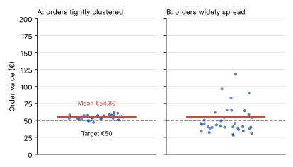
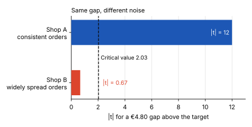
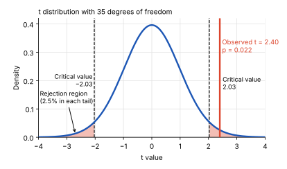
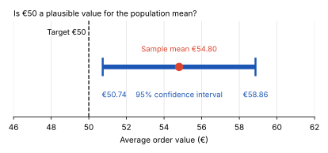
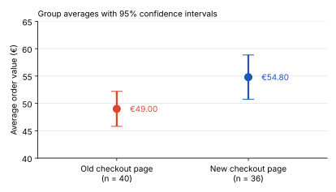
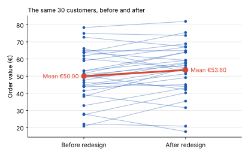
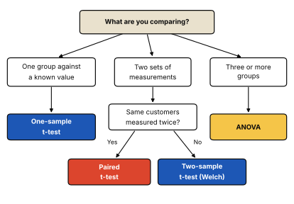

Inference & experiments
The t-Test: Comparing Averages in One or Two Groups
Your online shop redesigned its checkout page. In the first week after the launch, 36 orders came in with an average order value of €54.80. The target has always been €50.
Is that €4.80 difference a real shift—or could it simply be random variation in the orders you happened to receive?
A t-test helps answer exactly this question: is a difference between an average and a reference value, or between two averages, larger than we would reasonably expect from random variation?
In this post, we’ll look at the three main versions of the t-test and, more importantly, when each one is the right tool. For how the t-test differs from the z-test, see T-Test vs. Z-Test.
In this article
What a t-Test Measures
Imagine two online shops. Both have an average order value of €54.80, but their orders look very different.
- Shop A: Most orders are between €50 and €60.
- Shop B: Orders range from €10 to €200.
Both shops have the same average, but Shop B has much greater variation in order values.

Now suppose the target average order value is €50. Both shops are €4.80 above the target. But is this difference large enough to suggest that the true average order value is different from €50, or could it be due to random variation in the orders collected?
A t-test helps answer this question by comparing the observed difference with the variation we would expect from random sampling.
t = Observed differenceStandard error
- Observed difference: How far the sample average is from the target, or how far apart two sample averages are.
- Standard error: How much the sample average would typically vary across different samples.
A larger difference and a smaller standard error produce a larger absolute t-value. This provides stronger evidence against the null hypothesis.

The p-value tells us how likely it would be to obtain a t-value at least as extreme as the one observed if the null hypothesis were true.
Three Types of t-Tests
The right t-test depends on what you want to compare.
| Test | Question | Example |
|---|---|---|
| One-sample t-test | Is a population mean different from a target value? | Is the average order value different from €50? |
| Independent two-sample t-test | Are the population means of two independent groups different? | Do customers using the new checkout spend differently from customers using the old checkout? |
| Paired t-test | Is the average difference between two related measurements different from zero? | Did the same customers spend differently before and after the redesign? |
How do you choose?
- One group vs. a target: Use a one-sample t-test.
- Two independent groups: Use an independent two-sample t-test.
- The same people measured twice, or matched pairs: Use a paired t-test.
The key is to look at how your data was collected. Were you comparing one group with a target, two separate groups, or two measurements linked to the same people?
One-Sample t-Test: Is Our Average Order Value Different From the Target?
Your shop received 36 orders after the checkout redesign:
- Sample mean: x̄ = €54.80
- Sample standard deviation: s = €12.00
- Target mean: μ0 = €50
Step 1: State the hypotheses
- H0: The population mean order value equals €50: μ = 50.
- H1: The population mean order value differs from €50: μ ≠ 50.
Step 2: Calculate the test statistic
First, calculate the standard error:
SE = s√n = 12√36 = 2.00
Then calculate the t-statistic:
t = x̄ − μ0SE = 54.80 − 502.00 = 2.40
The observed mean is 2.40 standard errors above the target.
Step 3: Find the p-value
Because we estimate the population standard deviation from the sample, we use a t-distribution with 35 degrees of freedom:
df = n − 1 = 35
For t = 2.40 and 35 degrees of freedom, the two-sided p-value is approximately 0.022.
If the true population mean were €50, the probability of obtaining a t-statistic of 2.40 or more extreme in either direction would be approximately 2.2%.

Step 4: Draw a conclusion
Our p-value is below the significance level of 0.05:
p = 0.022 < 0.05
We therefore reject the null hypothesis.
The data provides statistically significant evidence that the population mean order value differs from €50.
The 95% confidence interval for the population mean is approximately:
€50.74 ≤ μ ≤ €58.86
Because the interval does not contain €50, it supports the same conclusion as the hypothesis test.

Statistical significance ≠ business significance.
The sample average is €4.80 above the target. However, this test does not establish that the checkout redesign caused the increase. To investigate whether the redesign caused a change, we would need an appropriate experiment, such as an A/B test.
Python
import numpy as np
from scipy import stats
n, x_bar, s, mu_0 = 36, 54.80, 12.00, 50
se = s / np.sqrt(n)
t = (x_bar - mu_0) / se
df = n - 1
p = 2 * stats.t.sf(abs(t), df)
t_crit = stats.t.ppf(0.975, df)
ci = (x_bar - t_crit * se, x_bar + t_crit * se)Two-Sample t-Test: Old vs. New Checkout Page
Now let’s compare the average order value before and after the checkout redesign. The two groups contain different customers, so we treat them as independent samples.
- 🔴 Old checkout page: n = 40, x̄ = €49.00, s = €10.00
- 🔵 New checkout page: n = 36, x̄ = €54.80, s = €12.00
The new checkout page has a higher sample average. But is the €5.80 difference large enough to be statistically significant?
Set Up the Test
We compare the population mean order values:
- H0: The two population means are equal: μnew = μold
- H1: The two population means differ: μnew ≠ μold
We use Welch’s t-test, which does not require the two populations to have equal variances. It is a good default when comparing two independent groups.
Calculate the Test Statistic
The standard error accounts for the sample sizes and variability of both groups:
SE = √(snew2nnew + sold2nold) = 2.55
The t-statistic measures the difference between the sample averages relative to this standard error:
t = 54.80 − 49.002.55 = 2.27
Interpret the Result
Welch’s t-test gives approximately 68.4 degrees of freedom and a two-sided p-value of 0.026.
Where do the 68.4 degrees of freedom come from?
Welch’s t-test does not assume equal variances, so it calculates the degrees of freedom from the data. First, find the variance of each group’s average:
New page:
A = 12236 = 14436 = 4.00
Old page:
B = 10240 = 10040 = 2.50
Then put them into the formula:
df = (A + B)2A2nnew − 1 + B2nold − 1
df = 6.5024.00235 + 2.50239 = 42.250.617 ≈ 68.4
A regular t-test would use 74 degrees of freedom (40 + 36 − 2). Welch’s gives a slightly smaller number when the groups differ in spread, which makes the test a little more cautious.
Because p = 0.026 < 0.05, we reject H0. There is statistically significant evidence that the population mean order values differ.
The estimated difference is €5.80 per order, with a 95% confidence interval of approximately €0.71 to €10.89.
The result suggests that average order value was higher with the new checkout page. However, this comparison alone does not prove that the redesign caused the increase. Other factors may have influenced spending.

Python
from scipy import stats
result = stats.ttest_ind_from_stats(
mean1=54.80, std1=12.00, nobs1=36, # new page
mean2=49.00, std2=10.00, nobs2=40, # old page
equal_var=False # Welch's t-test
)
print(result.statistic, result.pvalue) # 2.27, 0.026With the raw order values in two columns, stats.ttest_ind(new, old, equal_var=False) gives the same result.
Paired t-Test: The Same Customers Before and After the Redesign
The shop also tracked 30 customers who ordered both before and after the redesign. Now there are not two groups, but one group measured twice.
The key step is to calculate the change for each customer (after minus before). The test then works with these differences:
- Number of customers: n = 30
- Mean difference: d̄ = €3.60
- Standard deviation of the differences: sd = €8.00
A paired t-test is simply a one-sample t-test on these differences, with 0 as the reference value:
- H0: The population mean difference is 0: μd = 0
- H1: The population mean difference is not 0: μd ≠ 0
SE = sd√n = 8.00√30 = 1.46
t = d̄SE = 3.601.46 = 2.46
With df = n − 1 = 29, the two-sided p-value is approximately 0.020. Because 0.020 < 0.05, we reject H0. The 95% confidence interval for the population mean difference is approximately €0.61 to €6.59.

Why does pairing matter? Customers differ a lot: some always spend around €20, others €90. This variation is in both measurements, so it cancels out when we look at each customer’s own change.
Now imagine we ignored the pairing and treated the 30 “before” orders and the 30 “after” orders as two independent groups. With order values varying by about €15 between customers, the same €3.60 difference would give t = 0.93 and p = 0.36, which is no evidence of a change at all. The data is the same; only the test is different.
Pairing comes from the design, not from the result
Use a paired test only when each observation in one measurement has a natural partner in the other, such as the same customer, the same store or the same device. Do not pair observations afterwards just because it makes the p-value smaller.
Python
import numpy as np
from scipy import stats
n, d_bar, s_d = 30, 3.60, 8.00
se = s_d / np.sqrt(n)
t = d_bar / se
df = n - 1
p = 2 * stats.t.sf(abs(t), df) # 0.020
t_crit = stats.t.ppf(0.975, df)
ci = (d_bar - t_crit * se, d_bar + t_crit * se)With the raw order values of the same customers, stats.ttest_rel(after, before) gives the same result.
Assumptions and What to Do When They Fail
A t-test gives trustworthy p-values only if its assumptions are reasonably met. Four checks cover most business data:
- Independent observations. Each value should not influence another. If one customer places five orders and all five enter the sample as separate observations, the sample behaves as if it were larger than it is. Fix: average the orders per customer first, or use a paired design when you compare the same customers over time.
- Roughly normal averages. The test needs the sample average to be roughly normally distributed. With about 30 or more observations, the Central Limit Theorem usually takes care of this, even if individual orders are skewed. With smaller samples, check a histogram or a Q-Q plot (see Normal Distribution). In a paired test, this applies to the differences, not to the raw values.
- No dominating outliers. Order values are often right-skewed. A single €2,000 order can pull an average and inflate the standard deviation. First check whether it is a real order. If the skew is strong and the sample is small, use a log transformation or a rank-based test: the Mann-Whitney U test for two independent groups, or the Wilcoxon signed-rank test for paired data.
- Equal variances (Student’s version only). Student’s two-sample t-test assumes equal variances in both groups. Welch’s t-test removes this assumption, which is why it is the default.
How to Choose the Right t-Test
Two questions are enough to pick the right test: What are you comparing? and, if there are two sets of measurements, are they linked?

How to Explain It to Stakeholders
“In the first week after the redesign, the average order value was €54.80, compared with our target of €50. A one-sample t-test shows that this gap is unlikely to be random variation (t = 2.40, p = 0.022).”
“Compared with the old checkout page, the new one has a higher average order value, by €5.80 per order. A two-sample t-test finds statistically significant evidence of a difference (p = 0.026), but the plausible range is wide: between about €0.70 and €10.90 per order. Among 30 customers who ordered both before and after, the average order grew by €3.60 (p = 0.020).”
“All three tests point in the same direction, but they show a difference, not its cause. Seasonality or a promotion could play a role. To know whether the redesign really drives higher order values, we need an A/B test.”
Key Takeaways
- A t-test compares signal with noise. It divides the observed difference by the standard error to judge whether the difference is larger than random variation would produce.
- The data structure picks the test. One group against a known value: one-sample. Two independent groups: two-sample (Welch). The same units measured twice: paired.
- Check the assumptions. Independence, roughly normal averages and no dominating outliers matter more than the exact formula.
- Significance is not impact. A small p-value shows that a difference is unlikely to be random, not that it is large, profitable or caused by the change.